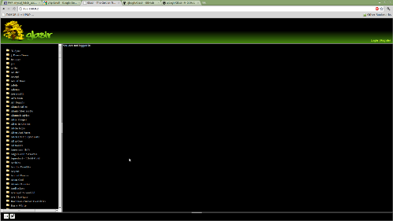
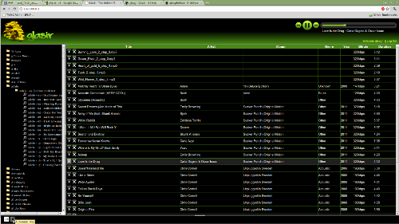

Glasir is an open source PHP/HTML5 media player for a personal music collection of unlimited size. For use with Chrome, Firefox, and Android phones.
Dependencies
Linux-based web server
mp321
oggenc
php
mysql
Install
Requirements:
Install mpg321 and oggenc
Step 1:
Copy 'config.inc.php.default' to 'config.inc.php' and configure the appropriate variables. Choose a database name that works for you, such as 'Glasir'.
Step 2:
Create a blank database with the name you chose, like 'Glasir' and assign appropriate permissions for the user account.
Step 3:
Run db.sql to create the database tables. Note, these tables may change as time goes on. See the next item for updates.
* For updates you may check out db_updates.sql (if it's available). This will record all changes that the database has gone through in order.
It is based on the db_original.sql file and will include version numbers for all changes.
Find the next highest version number to your system and run everything below the line to update your database.
Screenshots
User not logged in.

User logged in. Playlist shown.

Browser Compatibility
- Chrome: Glasir currently works well (perfectly) with Chrome.
- Android Default Browser: Glasir does not work with Android Browser.
- Firefox: Firefox must convert songs to ogg file format, which may take some time and will cause playback to be rather clunky until the files are generated.
- Firefox Mobile: Same issues as Firefox, although that says a lot about the mobile version being up-to-date with FF.
- Opera: Opera works well but CSS may not always look correct.
- Opera Mobile: Opera displays the webpage but doesn't work well with the Javascript and HTML5. It may not be as advanced as Opera.
- Opera Mini: Glasir does not work with Opera Mini. Try Opera Mobile instead.
- Safari: The Glasir project team is not working on Safari compatibility. It may or may not work.
- Internet Explorer: Try IE9, but don't expect it to work :\
License
Copyright 2011 Allan Bogh
Licensed under the Apache License, Version 2.0 (the "License");
you may not use this file except in compliance with the License.
You may obtain a copy of the License at
http://www.apache.org/licenses/LICENSE-2.0
Unless required by applicable law or agreed to in writing, software
distributed under the License is distributed on an "AS IS" BASIS,
WITHOUT WARRANTIES OR CONDITIONS OF ANY KIND, either express or implied.
See the License for the specific language governing permissions and
limitations under the License.
Authors
Developer: Allan Bogh (ajbogh@allanbogh.com)
Designer: Chintan Parikh
Contact
Allan Bogh (ajbogh@allanbogh.com)
Download
You can download this project in either
zip or
tar formats.
You can also clone the project with Git
by running:
$ git clone git://github.com/ajbogh/Glasir


{kind=link}
{kind=link}